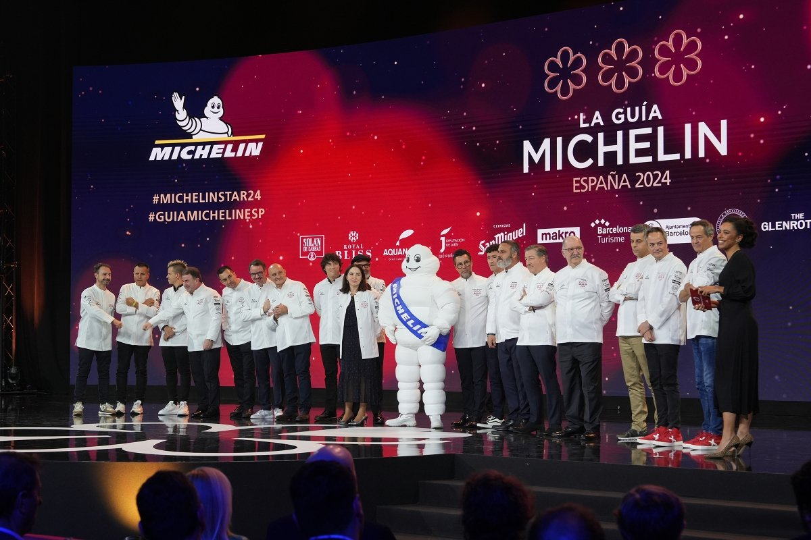
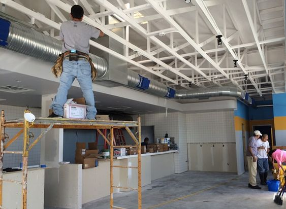

Meet the masterminds behind our Kids Taco Menu! Founded by a dynamic group of culinary enthusiasts and parents themselves, our restaurant was born from a shared passion for crafting delicious meals that bring families together. Drawing inspiration from their own experiences raising children and understanding the importance of wholesome, flavorful food, our founders set out to create a menu specifically tailored to young palates. With a commitment to quality ingredients, creative recipes, and a dash of whimsy, they've curated a selection of tacos that not only satisfy hunger but also ignite joy in every bite. Join us and discover the delicious vision brought to life by our dedicated founders, who believe that good food is the heart of every memorable family meal.
PRIZES

michelin awards
Step into our kitchen, where culinary excellence has earned us the attention of traditional culinary awards, solidifying our reputation as a destination for exceptional dining experiences. With pride, we showcase accolades from esteemed organizations recognizing our commitment to excellence in every bite of our Kids Taco Menu, Menu and Drinks. From local awards celebrating our dedication to sourcing fresh, quality ingredients to regional honors acknowledging our innovative flavors and culinary craftsmanship, our kitchen has been honored with a variety of prestigious prizes. These accolades serve as a testament to our passion for delivering top-notch food and service to our guests. So come taste the award-winning flavors of our Kids Taco Menu and experience firsthand why our kitchen is celebrated among the culinary elite.
Our restaurant has been honored with Michelin Stars for its exceptional culinary offerings, marking it as a destination for gourmet dining experiences.
We're proud recipients of multiple James Beard Awards, including recognition for Outstanding Chef and Best Restaurant, showcasing our commitment to culinary excellence.
The AAA Diamond Awards have bestowed their highest rating upon us, affirming our dedication to providing top-tier service, amenities, and dining experiences.
Ranked among the World's 50 Best Restaurants, our establishment has been celebrated on the global stage for its innovative cuisine and exceptional hospitality.
FUTURE

finishing the kitchen
In envisioning the future of our franchise, we see boundless opportunities for growth and innovation. As we continue to expand our footprint, our commitment to culinary excellence and unparalleled guest experiences remains unwavering. We aim to bring the flavors and joys of our Kids Taco Menu to even more communities, spreading happiness one delicious bite at a time. With a focus on sustainability, inclusivity, and creativity, we aspire to be not just a restaurant, but a beloved cultural institution that fosters connections and memories for families everywhere. Through strategic partnerships, technological advancements, and a relentless pursuit of excellence, we're excited to shape the future of dining and continue delighting taste buds for generations to come. Join us on this journey as we embark on new horizons and write the next chapter of our franchise story.